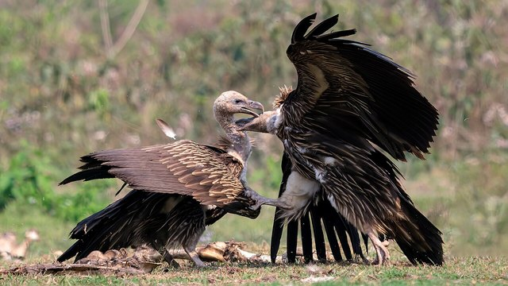

物理5–11 岁约 10 分钟
胃酸够强才骨头化掉，胃酸淡淡就骨头卡着？
同一只纸神鹫。胃酸够强才骨头化掉；胃酸淡淡就骨头卡着。差在胃酸够强还是胃酸淡淡，不在换成秃鹫热气流滑翔，也不在随便吞。本页不靠近真的，观察后洗手。
同一只纸神鹫，强酸一回，淡酸一回

胃酸够强才骨头化掉。胃酸淡淡就骨头卡着。先点「强酸」，再点「试一试」。
先猜一猜，再试
第 1 题：酸 80，胃酸够强，骨头化掉吗？
押一个。把酸调到 80，再点试一试。
第 2 题：酸 10，胃酸淡淡，还骨头化掉吗？
押好后酸 10，再试一试。
第 3 题：酸 50，刚好一半，算化掉了吗？
押好后酸 50，再试一试。
同一只纸神鹫：胃酸够强才骨头化掉；胃酸淡淡就骨头卡着
先点「强酸」再点「试一试」，看骨头化掉。再点「淡酸」试一次，看是不是骨头卡着。
纸神鹫始终是同一只。差在酸强不强，不在换成秃鹫热气流滑翔。也不在随便吞。酸够才化掉，一淡就卡着。
舞台上的「化掉」是本页比较尺子：酸 ≥ 80 才算骨头化掉。刚好 50 还不够。不靠近真鸟，观察后洗手。本页用纸板。
溶骨图鉴
点一张，对照舞台：谁让胃酸够强才骨头化掉，谁让胃酸淡淡就骨头卡着。
点一张图鉴，对照为什么胃酸够强才骨头化掉。
猜一猜
同一只纸神鹫要骨头化掉，靠的是强酸，还是淡酸？
先押一个，再点「看答案」。
任务：强酸和淡酸都试
先把酸调到 80 或更高试一次，再调到 20 或更低试一次。两头都点过「试一试」即可完成。
开放式提示不会代替上面的正式任务。
尚未完成：先强酸试一次，或淡酸试一次。
同一只纸神鹫，先强酸试一次，再淡酸试一次
舞台上只改一件事：胃酸够强有多够。同一只纸神鹫、同一块骨头，先强酸试一次，看化不化得掉；再淡酸试一次，看是不是骨头卡着。这样比，才知道化掉靠的是强酸，不是「淡酸更能化」，也不是「秃鹫热气流滑翔」。
回家只带两句：「胃酸够强才骨头化掉」；「胃酸淡淡就骨头卡着」。不要写成「越淡越好化」。
酸够，台上才骨头化掉，不是谁飞得更高。
胃酸淡淡的，骨头卡着化不掉；神鹫要比酸够不够，不是秃鹫那种热气流滑翔。
热气流滑翔另开；本页比酸强不强，两句不要并成一句。
不靠近、不抓，本页用纸板对照。
这在教什么：孩子要能对强酸和淡酸各报化掉或卡住，并否定「秃鹫热气流滑翔」和「淡酸更能化」。
- 强酸那一次，骨头化掉了吗？
- 淡酸，台上还骨头化掉吗？
- 本页要比秃鹫热气流滑翔吗？
- 能去靠近崖边的真神鹫吗？
化掉靠胃酸够强，不是秃鹫热气流滑翔，更不要靠近真鸟
胃酸够强，骨头才化掉。这一化只在够酸时才成立。一淡，眼前就剩卡着的骨头。
不要把它讲成「越淡越好化」或「变成秃鹫就能化」。秃鹫热气流滑翔是另一套。随便吞化不掉。
不靠近活的。看完按二十秒洗手。本页用纸板。
给家长的问题
- 强酸那一次，孩子指的是胃和骨头，还是在说「它比较猛」？让他再指一次化掉的骨头。
- 淡酸，为什么化不掉？哪一句四岁听得懂？
- 如果他说「秃鹫热气流滑翔就能化」——滑翔是哪一笔账？本页少的是强酸还是滑翔？
- 秃鹫热气流滑翔和神鹫溶骨，差在「天上滑」还是「胃里化」？
- 不靠近、不从高处跳、看完洗手：红线怎么说？本页能当滑翔课吗？
背后的原理
舞台上不写这些词，留给孩子用眼睛看。神鹫（Vultur gryphus）胃酸特别强，骨头才化得掉。胃酸淡淡的骨头就卡着。不是秃鹫那种热气流滑翔。不要靠近真的。本页用强酸 ≥ 80 当门槛，≤ 20 算胃酸淡淡。刚好 50 不算。
这不是秃鹫热气流滑翔说明书，也不是随便吞。滑翔另开，都不要并进本页第一完成句。
人去靠近活神鹫会让它受惊。观察后洗手。舞台用纸板。
接下来可以去
带走句：胃酸够强才骨头化掉；胃酸淡淡就骨头卡着。神鹫观察站看真强酸。